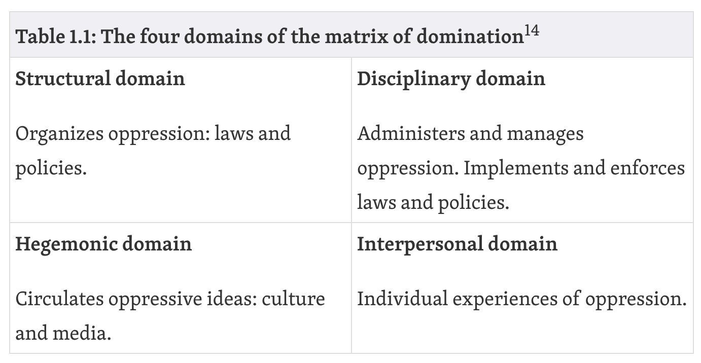
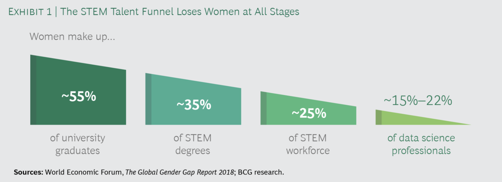
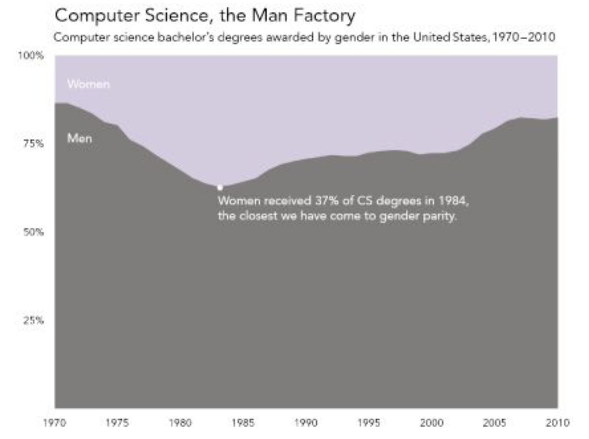

Lesson 1.3: Equality, diversity and inclusion in data science¶
Data science has grown a lot during the last decade and its applications now span most scientific fields and play an important role in industry and government. As a result, data science and data scientists have growing influence and power. Decision taken using data affect individuals and communities around the world in more ways than ever before.
Despite this influence, a number of important topics around the ethics of data science and its impact on equality, diversity and inclusion have been under-discussed.
In this lesson we:
Discuss and criticise some simplistic but widely used metaphors about the role of data science in today’s world.
Discuss power and its relationship to data science. We try to capture some of the ways in which data science reflects, reproduces or causes inequalities and oppression in society.
Demonstrate how data scientists can detect and challenge practices, ideas and privileges that reinforce inequality.
Give examples of real-world data science projects where EDI principles have been applied with or without success and demonstrate how to do participatory data science.
Data is the new oil¶
As we have seen at the beginning of this module, the importance and value of data are often highlighted in the press with a popular metaphor: ‘Data is the new oil’ (e.g. see this article in the Economist). This is meant to convey that data is a resource that is out there, available to be extracted and with large value for fueling the modern digital economy.
Team exercise (Split in groups)
The metaphor sounds appealing and accurate: Data is indeed a resource that (like oil) we can mine, process and use to generate profit.
But the metaphor can serve to hide some aspects of the role of data in the real-world.
Specifically, let’s discuss the following questions in groups:
Where does this ‘data’ come from?
Who benefits from this ‘new oil’? Who doesn’t and why?
Who has control over the process of gathering and analysing data and making data-driven decisions?
How is data ‘extracted’? Is it fair to treat data as a free resource available to be extracted?
What are the risks of using data to solve problems?
Data and power¶
Data is indeed a valuable resource that increasingly plays a major role in fueling our economies. It can and is being used to make the world a better place, for instance by helping tackle climate change. At the same time, data and data science can be oppressive and there are multiple instances and hisitorical examples of this in various fields.
To understand how data oppression operates in today’s world, it is useful to start by examining a related concept: power. How does power operate in society? How are data used within existing power structures?
Here, we provide one definition of power which is useful within our context. With this, we do not aim to even remotely contribute to the disussion on the nature of power, which has been the topic of counteless philosophical, sociological and other studies. But the following definition can help us examine how the relationship between power and data science. According to the book Data Feminism:
Power is the current configuration of structural privilege and structural oppression, in which some groups experience unearned advantages — because various systems have been designed by people like them and work for people like them — and other groups experience systematic disadvantages — because those same systems were not designed by them or with people like them in mind.
To better understand how power is organised and experienced by people in societies, we can use the following matrix of oppression proposed in Black Feminist Thought and used in Data Feminism: 
Data science overlaps with these four domains in various ways. These forces of oppression are encountered in our daily lives but are also present in our datasets, our data science industry, our research, our code. Some examples are provided below.
Examples¶
What data do we collect?¶
Political and cultural factors have a strong influence on what types of data are collected and not collected. The choices our governments, organisations and corporations make say a lot about which problems are prioritised in our societies and in our data science communities. The disciplinary and hegemominc domains are often important in this discussion.
Examples:
There are many datasets that one would expect they would exist but they don’t. For example, see this Missing Datasets list. Our decisions not to collect these data often express biases, systematic failures, oppression.
Up to 2018, there was still no national system in the US for tracking complications sustained in pregnancy and childbirth, even though similar systems had long been in place for tracking any number of other health issues, such as teen pregnancy, hip replacements, or heart attacks (USA today). Recent research has shown that black women are over 3 times more likely than white women to die from such complications (ProPublica article). It took a social media post from Serena Williams who experienced complications when giving birth to her daughter to ignite a public converstation.
A lot of the data we collect for research and industrial purposes are predominantly male (see this and Caroline Criado Perez, Invisible Women: Exposing Data Bias in a World Designed for Men). For example, car crash dummies were until recently designed to represent male bodies, which meant a significant increase in the risk of injury for women.
Many of the datasets that organisations/states publish might be missing important variables, not break down numbers by gender, age, race etc (which can hide many biases) and/or exclude people that should be there (e.g. children’s mental health is often not measured, data used for designing products or conducting medical research have historically been male-dominated).
A well know example of biased data collection and use comes from the domain of face recongition, where it was recently shown that commercial facial recognition software misclassifies darker-skinned people significantly more than lighter-skinned people, due to biased training and benchmarking data (78% male and 84% white).
What do we use them for?¶
Many applications of data science have helped shed light to important societal problems and make the world a better place. Nevertheless, some of the most common motivations for collecting and using data involve generating profit, using it for surveillance, using it to administer scarcity or using it for scientific purposes (in many cases aiming to benefit specific groups).
Examples:
There is a major drive to convert even the most mudane aspects of human lives and experience to data in pursuit of profit. This is often described as ‘datafication’. We collect data about every simple action we do online (e.g. how many seconds a user looks at a Facebook post or what their searches are), data about our behaviour in the workplace (e.g. see Amazon’s tracking of workers’ movements and the increasingly prevalent monitoring of employees’ usage of their computers), a large number of things that happen in our cities and roads, data about crime and police reaction to it. There are connections here to the concept of ‘biopolitics’ as described by Michel Foucault but also the more recent concept of ‘psychopolitics’ as described in Byung-Chul Han Psychopolitics: Neoliberalism and New Technologies of Power.
Social media like Facebook use data collected by user in ways that have been ethically challenged, e.g. see recent stories about the Cambridge Analytica scandal and the documentary The Social Dilemma about how Facebook designs their platform to be addictive and the impact this can have on society and individuals (also see Facebook’s reply to the allegations here).
There are multiple instances where data and algorithms have reinforced existing oppression and injustice. For example, this widely circulated report by ProPublica demonstrated how a machine learning algorithm built to predict recidivism of convicted criminals was racially biased. Despite not using race as a feature, the algorithm used various other features which acted as a proxy for race. It is scary that algorithms like this one have been used in many US states and influenced judges’ decisions.

A similar example of racial bias comes from algorithms used to predict high crime areas with the purpose of focusing police presence there. PredPol in an example of such tools used by the City of Los Angeles for nearly a decade to determine which neighborhoods to patrol more heavily. Like many tools based on historic data, PredPol actually predicts the past, rather than the future. Historically, police presence has disproportinoately focused on black neighbourhoods. This racist practice now finds its way through the algorithm to the present; higher crime predicted in those neightbourhood, police presence is increased; but increased police presence leads to more crime being detected and reports, creating a feedback loops that perpetuates the same practices.
There is a flip side to the coin of biased facial recongition software mentioned above. These systems are increasingly used for aggressive surveillance by states around the world; you might not want your face to be rcognisable if this is going to lead to violence against you or unfair presecution!
Who controls the data and algorithms?¶
If we think about who collects and controls data in today’s world and with whose benefit in mind, we can see some worrying patterns.
The collection and control of large, valuable and data is increasingly concentrated in the hands of a few major organisations (e.g. Google, Facebook, Amazon, Apple, Alibaba) and various smaller ones, most of which are not under democratic control. These organisations have accumulated power in the form of data and algorithms that creates dangerous imbalances.
Despite the high value of data, users and citizens have limited choice when it comes to giving away their data if they want to maintain access to certain platforms; these platforms are essentially monopolies.
Regulation and legislation are still lagging behind, leaving a lot of space for misuse. A lot of decisions are in the hands of organisations that are in control of these platforms
Who works in data science?¶
A lot of data indicate that data science has a diversity problem, not unlike other STEM fields. People employed in the field strongly tend to be white and male and from a relatively limited set of academic backgrounds (mostly STEM). Indicatively:
The data science funnel loses women in all stages [1]: 
Women computer science degree share has regressed [2]: 
RSE/RDS is even more male and white than data science in general. RSEs in the UK are only 14% female and 5% BAME [3]
The Turing’s REG team (responsible for developing this course) are 34% female.
These diversity issues create unconscious or conscious biases and affect the way data science operates in the world. If data scientists belong to particular groups that are already privileged in society in many ways, there is a high chance that blind spots will appear; it might be difficult for members of privileged groups to imagine the ways in which their work might affect people outside those groups. Data science from these groups is likely to result in data products for those groups.
[1] “What’s Keeping Women Out of Data Science? “, BCG report, https://www.bcg.com/publications/2020/what-keeps-women-out-data-science
[2] Figure 1.2 from Data Feminism: https://data-feminism.mitpress.mit.edu/pub/vi8obxh7/release/3
[3] Chue Hong, Neil P. and Cohen, Jeremy and Jay, Caroline, “Understanding Equity, Diversity and Inclusion Challenges Within the Research Software Community”, http://dx.doi.org/10.1007/978-3-030-77980-1_30, 2021
Data myths and privilege¶
A number of narratives and myths about data science and scientists have circulated widely since the field exploded in popularity in the 2010s. These often reinforce a simplistic understanding of what data science is, what it can do and how it should collaborate with other fields. Some examples are given below:
Data scientists as “wizards” or “superstars”: These glorifying narratives are based on the idea that data scientists can magically solve any problem given a bunch of data. The truth is different though. Data scientist’s success becomes possible via collaboration with domain experts, researchers, software developers and users - data scientists are strangers in the datasets and problems they work with, they need input from users and domain experts to understand how data were collected, why they have certain characteristics, why some values are missing, etc; data scientists rely heavily on a massive array of open source software that has been developed by others and on methodologies developed by academics and researchers over long stretches of time; the datasets that data scientists exploit have been created using data from patients, citizens and users and have been labeled, put together and documented by various individuals and organisations. Data scientists that perceive themselves as omnipotent geniuses can fall into the trap of downplaying feedback from domain experts, communities and other stakeholders in their projects, being overconfident that a solution can be found even though sometimes it is hard or impossible! More importantly, it is often the voices of marginalised groups that are silenced in this process, given the lack of diversity in data science teams and the resulting biases (e.g. think of the case of biased data sets in face recognition).
Data are raw/neutral/objective: It is often taken for granted that data “tell the truth”, “are raw” and can be trusted blindly in analyses. Nevertheless, in reality data are (more often than not) the biased output of unequal social, historical and economic condition and they should be treated as such [1]. Examples given above (e.g. COMPAS algorithm) demonstrate how data can be biased and lead to negative social outcomes. The idea that data represent truth and are neutral is also reflected in how data visualisations are often perceived and presented in the press. More on this is discussed in Module 3.
Solving problems with data is always preferable: The idea that data-driven solutions are by default “good” or “better” than other solutions is flawed. There are many reasons why a data-driven solution might be more biased, less fair and/or worse socially that the non-data-driven state of the art or compared to an alternative data-driven solutions. For example, redlining maps created by banks to rate the risk of granting mortgages based on area rather than credit scores. Other examples involve various cases where the data used are insufficient, biased or wrong (e.g. research and development of products is often based on data from men’s bodies and much less from women’s). It is important to always think about how the projects you work with will affect users, citizens, society and in what organisational context they will be deployed. Data science solutions usually have a political dimension; instead of pretending that it is not there, we should try to address it and understand it when designing our projects; we should be explicit about the power dynamics and privilege hazards involved.
Data science for good: There are many initiatives in the data science world with a stated goal to do data science for good (including events organised by The Alan Turing Institute [2]). While many of these efforts are commendable and have had real positive impact, there are a number of question one is entitled to ask: What is good and who defines it? Do the data scientists involved have enough knowledge about the domain to make meaningful contributions? Who maintains and uses the code after the event? Are communities and users involved?
[1] Data Feminism: https://data-feminism.mitpress.mit.edu/
[2] The Alan Turing Institute: Data Science for Social Good: https://www.turing.ac.uk/collaborate-turing/data-science-social-good
How to challenge bias and oppression as a data scientist¶
What can a research data scientist do to detect and challenge the various power imbalances, biases and practices in the field that create/reinforce oppression? There is no easy answer and this is a constantly developing field with contributions from a lot of academics and practitioners. Some key points are listed below:
Data scientist as public intellectual: Data scientist work should involve not only wrangling data and building models but also delving into the ethical, cultural, legal and political aspects of their projects [1]. Keeping the matrix of domination in mind when thinking about your projects is a good starting point. Think what your work means in the context of the structural and disciplinary dimensions of the matrix: What are the current legal and administrative practices in the field and do they involve oppressive elements? How does the project fit in? Could one of the outputs of your project be to publish a report or advise related to current legal or regularoty practices? Can your research impact culture and norms in society or challenge them, e.g. by giving public talks or using other forms of communication? How does it affect individuals and communities in the personal level? Can relationships be built with people that provide the data or that are affected by them and can these people lead part of the project, particularly people belonging to oppressed or underrepresented groups? Examples:
ProPublica [2]: This investigative journalism organisation analyse a large number of public datasets and produce reports that impact the public conversation on issues of racism, healthcare and others.
Forensic Architecture [3]: This organisation analyses various types of data (including photographs, video and others) in order to investigate state and corporate violence, human rights violations and environmental destruction all over the world and reconstruct violent events.
As UK’S national institute for data science, The Alan Turing Institute’s role involoves leading the public converstation around data through agenda-setting research, public engagement, and expert technical advice, driving new and innovative ideas which have a significant influence on industry, government, regulation, or societal views, or which have an impact on how data science and artificial intelligence research is undertaken. Examples of these activities are the Public Policy Programme and the regularly organised Data Study Groups.
Counter-data: This is the practice of collecting data using grass-roots organising and/or platforms designed for that, focusinig on data collection that is ommitted by states or organisations. More on this will be covered in Module 2.
Asking questions during project scoping: Data scientists should be conscious of the ethical and societal implications of their research. They should also question and discuss the framing of the research questions, the data used, the meaning and content of the features they use. Some questions you could ask when thinking about your next project:
Should this problem be solved with data science methods?
How was the data collected? Was explicit consent provided for using the data within the context of this project?
Should we be thinking abouot data privacy and anonymisation to prevent individuals’ identification?
What are the purposes of this project? By whom and how will the end product be used? Are there possible secondary uses by the same or other organisations that might be haramful? What can be done to mitigate risks?
Do data adequately represent the quantities we are interested in? For example, different surveys ask questions about mental health in different ways. The exact question needs to be know in order to understand if the answers are what we need in order to address our research question. Also, the number of categories used can be important, e.g. is mental health categorised as “Good” and “Bad” or are more categories used? Or is a qualitative description used? Is this appropriate? Do we need to get extra data? Another important example is data that record gender and biological sex. How do we ask these questions given that both of these characteristics exist in a spectrum? How do we treat them in our analyses?
What does existing literature tell us about our research question? In many cases, there are well-established theories and frameworks that address part of all of our research question and it is almost always a good idea to take those into account and reuse them rather than reinventing them!
Is the project team diverse and in what ways? A useful way to cultivate awareness of the team’s position and privileges is to explicitly ask all participants to reflect on their backgrounds and multiple identities and how these could affect their work in the project. Documenting those if people feel comfortable with it can increase transparency about who worked on this project.
Going through an ethics review process: Academic institutions (e.g. universities, research institutes) have ethics. review panels or groups that can be a valuable resource when planning a new project. Their remit involves advising on ethical and proportionate use of datasets, individuals’ data privacy and security and general impact and potential hazards resulting from project work. The present course went through an ethics review process within the Alan Turing Institute, whose outcome can be found here.
Crediting visible and invisible labour: It is often the case than when data products are released credit is mostly attributed to researchers and data scientists. But there are many other people that might have contributed to the development of this product e.g. by providing data, labeling data, collecting, preprocessing and documenting them, developing code that we reused, providing informal and formal feedback that made the project possible. These “services” are often free and very often unacknowledged. An interesting example comes from large platforms like Facebook, Amazon and Google. All of them are based on a large number of low-pay work that often is overlooked (e.g. Amazon MTurk, Google’s book scanners, Facebook’s reviewers). Research data science benefits from acknowledging the work of everyone involved directly or indirectly in the development of a product; and doing so during the development of the project rather than afterwards. See the Turing Way as a small example of how to do that.
Teach each other: Part of the role of a research data scientist is to support their collaborators and help them pick up new skills that will allow them to become more comfortable with collaborative work, data science methods, reproducibility, version control and other techniques. This can also be a way to make sure your projects will be maintained after you stop working on them! Finally, sharing knowledge even more widely by tweeting, writing blog posts, or developing teaching resources that extend beyond the strictly technical elements of data science is also important.
[1] Data Feminism: https://data-feminism.mitpress.mit.edu/
[2] ProPublica: https://www.propublica.org/
[3] Forensic Architecture: https://forensic-architecture.org/